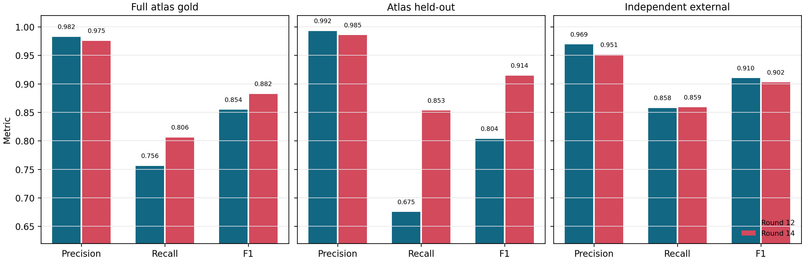
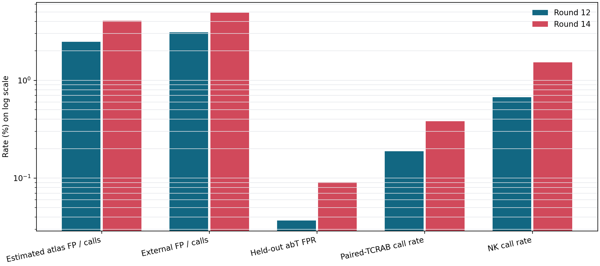
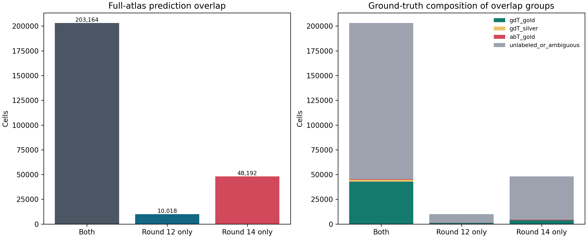
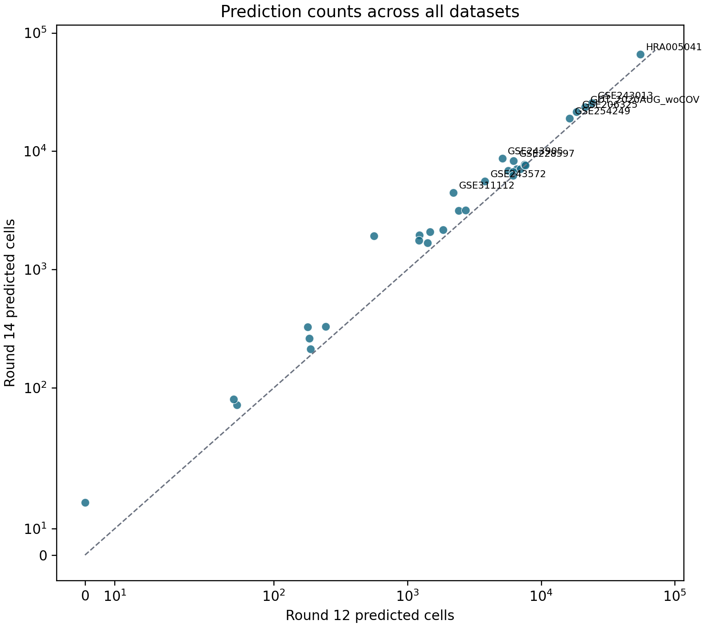
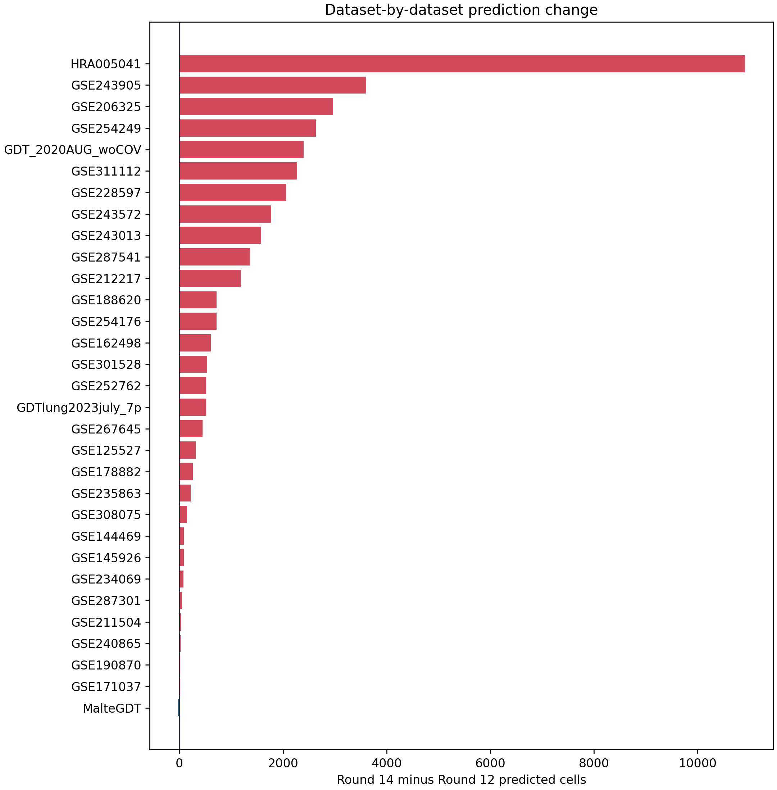
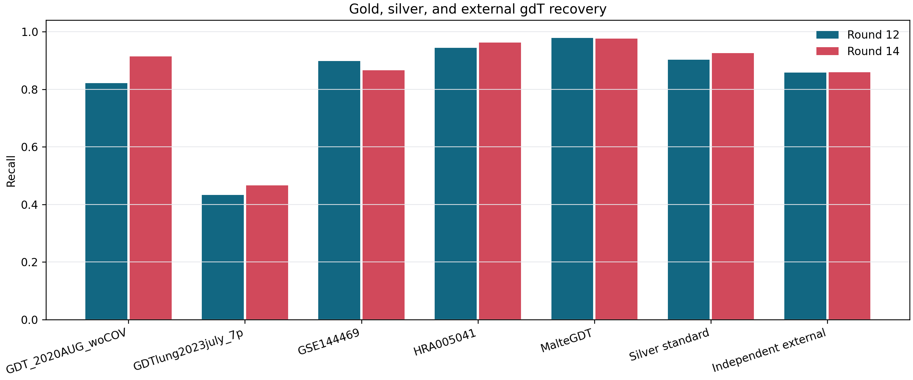
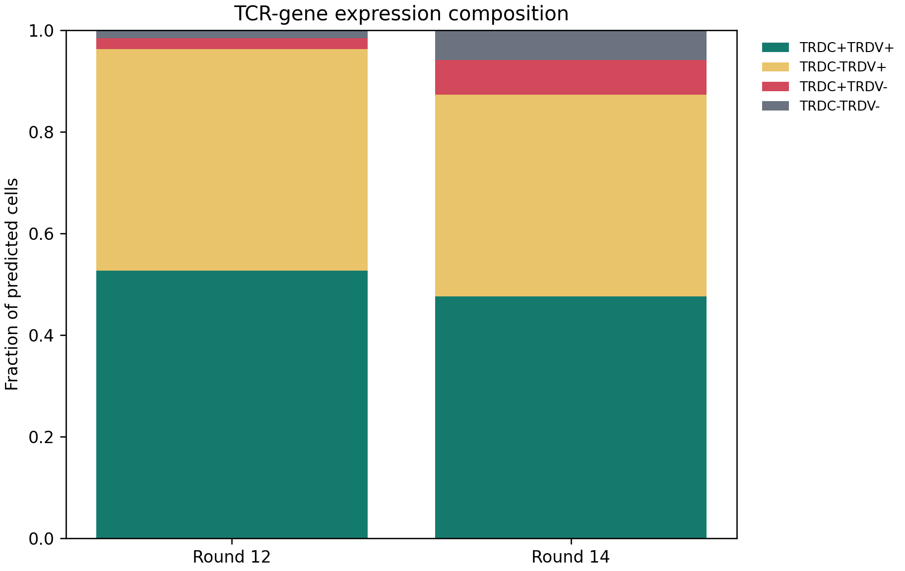

Round 14 is selected because it is the only candidate that reaches the prespecified 0.80 full-atlas gold-recall floor while remaining below all FP guardrails. It also has substantially higher held-out cord-blood recall and higher mean F1 across the three evaluation frames. Round 12 remains the lower-FP fallback.
Executive Comparison
Round 14 adds 38,174 raw atlas calls and recovers 2,863 additional gold gdT cells. The cost is 2,832 additional paired-TCRAB calls and 2,201 additional NK-annotated calls. On the independent external set, Round 14 recovers 1 additional true gdT cell but adds 16 false positives, so Round 12 has the higher external F1. On the atlas held-out set, Round 14 has the substantially higher F1 because it rescues cord-blood gdT cells.
| Measure | Round 12 | Round 14 | Round 14 minus Round 12 |
|---|---|---|---|
| Raw atlas calls | 213182 | 251356 | 38174 |
| Gold gdT recovered | 43681 | 46544 | 2863 |
| Silver gdT recovered | 1981 | 2031 | 50 |
| Paired-TCRAB calls | 2748 | 5580 | 2832 |
| NK-annotated calls | 1723 | 3924 | 2201 |
| Evaluation | Round 12 precision | Round 12 recall | Round 12 F1 | Round 14 precision | Round 14 recall | Round 14 F1 |
|---|---|---|---|---|---|---|
| Full atlas primary gold | 0.9823 | 0.7560 | 0.8544 | 0.9752 | 0.8056 | 0.8823 |
| Atlas held-out combined | 0.9925 | 0.6751 | 0.8036 | 0.9854 | 0.8530 | 0.9144 |
| Independent external | 0.9690 | 0.8576 | 0.9099 | 0.9509 | 0.8586 | 0.9024 |
Decision Rule
Pass all four safety/recall guardrails, then maximize mean F1 across full-atlas gold, atlas-held-out, and independent-external evaluations.
| model | full_atlas_recall | full_atlas_estimated_fp_fraction | external_specificity | heldout_GSE254249_fp_rate | full_atlas_primary_gold_recall_ge_0p80 | full_atlas_estimated_fp_fraction_le_0p05 | external_specificity_ge_0p9985 | heldout_GSE254249_fp_rate_le_0p001 | all_guardrails_pass |
|---|---|---|---|---|---|---|---|---|---|
| round12 | 75.60% | 2.47% | 99.93% | 0.04% | False | True | True | True | False |
| round14 | 80.56% | 4.06% | 99.89% | 0.09% | True | True | True | True | True |
Mean F1 across full-atlas gold, atlas-held-out, and independent-external evaluations: Round 12 = 0.8560; Round 14 = 0.8997.
| criterion | preferred_direction | round12 | round14 | winner |
|---|---|---|---|---|
| Full-atlas primary F1 | higher | 0.8544 | 0.8823 | round14 |
| Atlas held-out F1 | higher | 0.8036 | 0.9144 | round14 |
| Independent external F1 | higher | 0.9099 | 0.9024 | round12 |
| Full-atlas primary recall | higher | 0.7560 | 0.8056 | round14 |
| Silver recall | higher | 0.9029 | 0.9257 | round14 |
| Independent external precision | higher | 0.9690 | 0.9509 | round12 |
| Full-atlas estimated FP fraction | lower | 0.0247 | 0.0406 | round12 |
| Full-atlas paired-TCRAB calls | lower | 2748.0000 | 5580.0000 | round12 |
| Full-atlas NK calls | lower | 1723.0000 | 3924.0000 | round12 |
Figures







Held-Out Cohorts
The atlas-held-out frame contains sorted cord-blood gdT positives from GDT_2020AUG_woCOV and paired-TCRAB/no-gdTCR negatives from GSE254249. The external H5AD was not used for fitting or threshold selection.
| strategy | group_value | n_cells | predicted_positive | tp | fp | fn | precision | recall | specificity | f1 |
|---|---|---|---|---|---|---|---|---|---|---|
| round12 | abT_GSE254249_paired_TCRAB_no_gdTCR | 173697 | 64 | 0 | 64 | 0 | 0.0000 | 0.0000 | 0.9996 | 0.0000 |
| round12 | gdT_GDT_2020AUG_woCOV_cord_blood | 12498 | 8437 | 8437 | 0 | 4061 | 1.0000 | 0.6751 | 0.8060 | |
| round14 | abT_GSE254249_paired_TCRAB_no_gdTCR | 173697 | 158 | 0 | 158 | 0 | 0.0000 | 0.0000 | 0.9991 | 0.0000 |
| round14 | gdT_GDT_2020AUG_woCOV_cord_blood | 12498 | 10661 | 10661 | 0 | 1837 | 1.0000 | 0.8530 | 0.9207 |
| model | group | group_type | n_cells | called_positive | rate |
|---|---|---|---|---|---|
| round12 | all_real_gdT | positive_recall | 948 | 813 | 0.8576 |
| round12 | TRDV_positive_real_gdT | positive_recall | 847 | 793 | 0.9362 |
| round12 | TRDC_plus_TRDV_minus_real_gdT | positive_recall | 48 | 17 | 0.3542 |
| round12 | Vd2_real_gdT | positive_recall | 638 | 606 | 0.9498 |
| round12 | primary_negative | negative_false_positive | 38047 | 26 | 0.0007 |
| round12 | NK_negative | negative_false_positive | 920 | 3 | 0.0033 |
| round12 | paired_TCRAB_negative | negative_false_positive | 33168 | 23 | 0.0007 |
| round12 | TRDC_plus_TRDV_minus_negative | negative_false_positive | 652 | 6 | 0.0092 |
| round14 | all_real_gdT | positive_recall | 948 | 814 | 0.8586 |
| round14 | TRDV_positive_real_gdT | positive_recall | 847 | 790 | 0.9327 |
| round14 | TRDC_plus_TRDV_minus_real_gdT | positive_recall | 48 | 22 | 0.4583 |
| round14 | Vd2_real_gdT | positive_recall | 638 | 600 | 0.9404 |
| round14 | primary_negative | negative_false_positive | 38047 | 42 | 0.0011 |
| round14 | NK_negative | negative_false_positive | 920 | 9 | 0.0098 |
| round14 | paired_TCRAB_negative | negative_false_positive | 33168 | 36 | 0.0011 |
| round14 | TRDC_plus_TRDV_minus_negative | negative_false_positive | 652 | 14 | 0.0215 |
Prediction Overlap
| total_atlas_cells | round12_predicted | round14_predicted | both | round12_only | round14_only | union | jaccard | fraction_round12_also_round14 | fraction_round14_also_round12 |
|---|---|---|---|---|---|---|---|---|---|
| 5128904 | 213182 | 251356 | 203164 | 10018 | 48192 | 261374 | 0.7773 | 0.9530 | 0.8083 |
| overlap_category | n_cells | unlabeled_or_ambiguous | unlabeled_or_ambiguous_fraction | abT_gold | abT_gold_fraction | gdT_gold | gdT_gold_fraction | gdT_silver | gdT_silver_fraction | NK_annotation | paired_TCRAB_non_gdT | TRDC+TRDV+ | TRDC-TRDV+ | TRDC+TRDV- | TRDC-TRDV- |
|---|---|---|---|---|---|---|---|---|---|---|---|---|---|---|---|
| Both | 203164 | 157819 | 0.7768 | 636 | 0.0031 | 42752 | 0.2104 | 1957 | 0.0096 | 1334 | 2002 | 110470 | 87995 | 3848 | 851 |
| Round 12 only | 10018 | 8912 | 0.8896 | 153 | 0.0153 | 929 | 0.0927 | 24 | 0.0024 | 389 | 746 | 1809 | 4934 | 735 | 2540 |
| Round 14 only | 48192 | 43779 | 0.9084 | 547 | 0.0114 | 3792 | 0.0787 | 74 | 0.0015 | 2590 | 3578 | 9195 | 11928 | 13272 | 13797 |
Round 14-only calls contain 3,792 gold and 74 silver gdT cells. Round 12-only calls contain 929 gold and 24 silver gdT cells.
Dataset-by-Dataset Audit
All datasets are shown. Count changes are predictions, not biological abundance estimates; denominator-aware rates and truth recovery are included where labels exist.
| source_gse_id | total_cells | round12_predicted | round14_predicted | round14_minus_round12 | jaccard | gdT_gold | round12_gold_recall | round14_gold_recall | round12_NK | round14_NK | round12_paired_TCRAB | round14_paired_TCRAB |
|---|---|---|---|---|---|---|---|---|---|---|---|---|
| HRA005041 | 766639 | 55253 | 66167 | 10914 | 79.26% | 4894 | 94.34% | 96.16% | 152 | 194 | 1109 | 3208 |
| GSE243905 | 350438 | 5119 | 8726 | 3607 | 55.54% | 0 | 191 | 532 | 147 | 510 | ||
| GSE206325 | 501012 | 18458 | 21428 | 2970 | 78.37% | 0 | 61 | 93 | 0 | 0 | ||
| GSE254249 | 406494 | 16261 | 18895 | 2634 | 78.60% | 0 | 138 | 54 | 64 | 158 | ||
| GDT_2020AUG_woCOV | 25904 | 21275 | 23677 | 2402 | 88.16% | 25904 | 82.13% | 91.40% | 11 | 12 | 0 | 0 |
| GSE311112 | 90599 | 2206 | 4479 | 2273 | 46.44% | 0 | 15 | 19 | 9 | 10 | ||
| GSE228597 | 149812 | 6222 | 8287 | 2065 | 70.25% | 0 | 34 | 49 | 0 | 0 | ||
| GSE243572 | 188217 | 3804 | 5576 | 1772 | 61.45% | 0 | 424 | 1661 | 59 | 88 | ||
| GSE243013 | 759436 | 24043 | 25620 | 1577 | 81.24% | 0 | 127 | 154 | 0 | 0 | ||
| GSE287541 | 110874 | 562 | 1926 | 1364 | 24.46% | 0 | 9 | 25 | 0 | 0 | ||
| GSE212217 | 213706 | 5673 | 6860 | 1187 | 75.66% | 0 | 47 | 138 | 207 | 384 | ||
| GSE188620 | 123218 | 1232 | 1954 | 722 | 56.79% | 0 | 76 | 228 | 25 | 123 | ||
| GSE254176 | 96953 | 2422 | 3142 | 720 | 73.33% | 0 | 37 | 80 | 0 | 0 | ||
| GSE162498 | 75880 | 1471 | 2081 | 610 | 63.91% | 0 | 85 | 213 | 0 | 0 | ||
| GSE301528 | 44105 | 1223 | 1764 | 541 | 66.78% | 0 | 55 | 124 | 0 | 0 | ||
| GSE252762 | 45132 | 6187 | 6708 | 521 | 85.25% | 0 | 2 | 4 | 0 | 0 | ||
| GDTlung2023july_7p | 15175 | 6561 | 7081 | 520 | 80.74% | 15175 | 43.24% | 46.66% | 17 | 25 | 0 | 0 |
| GSE267645 | 92501 | 2730 | 3182 | 452 | 77.64% | 0 | 32 | 79 | 0 | 0 | ||
| GSE125527 | 46396 | 1848 | 2168 | 320 | 79.69% | 0 | 3 | 23 | 0 | 0 | ||
| GSE178882 | 67755 | 1412 | 1675 | 263 | 75.00% | 0 | 24 | 89 | 0 | 0 | ||
| GSE235863 | 241766 | 7506 | 7724 | 218 | 77.96% | 0 | 15 | 24 | 0 | 0 | ||
| GSE308075 | 112337 | 180 | 328 | 148 | 47.25% | 0 | 0 | 2 | 4 | 32 | ||
| GSE144469 | 107068 | 7018 | 7103 | 85 | 83.34% | 4003 | 89.78% | 86.64% | 70 | 5 | 1124 | 1067 |
| GSE145926 | 21039 | 245 | 330 | 85 | 52.93% | 0 | 43 | 23 | 0 | 0 | ||
| GSE234069 | 20807 | 184 | 262 | 78 | 63.37% | 0 | 1 | 2 | 0 | 0 | ||
| GSE287301 | 340227 | 6161 | 6216 | 55 | 77.50% | 0 | 27 | 32 | 0 | 0 | ||
| GSE211504 | 37244 | 50 | 80 | 30 | 46.07% | 0 | 0 | 0 | 0 | 0 | ||
| GSE240865 | 21680 | 189 | 213 | 24 | 77.09% | 0 | 10 | 16 | 0 | 0 | ||
| MalteGDT | 7800 | 7634 | 7612 | -22 | 98.57% | 7800 | 97.87% | 97.59% | 3 | 3 | 0 | 0 |
| GSE190870 | 16753 | 0 | 20 | 20 | 0.00% | 0 | 0 | 20 | 0 | 0 | ||
| GSE171037 | 31937 | 53 | 72 | 19 | 32.98% | 0 | 14 | 1 | 0 | 0 |
Paired Statistical Tests
Exact McNemar tests compare discordant cell-level errors. P-values are descriptive because cells from the same donor are correlated; effect sizes and cohort consistency remain the primary evidence.
| evaluation | n_cells | round12_errors | round14_errors | round12_correct_round14_wrong | round12_wrong_round14_correct | discordant | exact_mcnemar_p | favored_model | note |
|---|---|---|---|---|---|---|---|---|---|
| independent_external_primary | 38995 | 161 | 176 | 47 | 32 | 79 | 0.1147 | round12 | Cell-level paired test; descriptive because cells within donors are correlated. |
| independent_external_gdT | 948 | 135 | 134 | 21 | 22 | 43 | 1.0000 | round14 | Cell-level paired test; descriptive because cells within donors are correlated. |
| independent_external_negative | 38047 | 26 | 42 | 26 | 10 | 36 | 0.0113 | round12 | Cell-level paired test; descriptive because cells within donors are correlated. |
| atlas_heldout_combined | 186195 | 4125 | 1995 | 286 | 2416 | 2702 | 0.0000 | round14 | Cell-level paired test; descriptive because cells within donors are correlated. |
| atlas_heldout:abT_GSE254249_paired_TCRAB_no_gdTCR | 173697 | 64 | 158 | 127 | 33 | 160 | 0.0000 | round12 | Cell-level paired test; descriptive because cells within donors are correlated. |
| atlas_heldout:gdT_GDT_2020AUG_woCOV_cord_blood | 12498 | 4061 | 1837 | 159 | 2383 | 2542 | 0.0000 | round14 | Cell-level paired test; descriptive because cells within donors are correlated. |
| full_atlas_gdT_gold | 57776 | 14095 | 11232 | 929 | 3792 | 4721 | 0.0000 | round14 | Cell-level paired test; descriptive because cells within donors are correlated. |
| full_atlas_gdT_silver | 2194 | 213 | 163 | 24 | 74 | 98 | 0.0000 | round14 | Cell-level paired test; descriptive because cells within donors are correlated. |
| full_atlas_abT_gold | 603203 | 789 | 1183 | 547 | 153 | 700 | 0.0000 | round12 | Cell-level paired test; descriptive because cells within donors are correlated. |
Artifact and Cache Verification
Both artifacts were frozen before comparison. Direct external inference was required to match the existing validated cache exactly. A deterministic atlas sample included shared calls, each model-only group, and cells called by neither model.
| model | display_name | payload_model | threshold | sha256 | size_bytes | snapshot_path | provenance | n_gene_features | n_total_features | model_object_type |
|---|---|---|---|---|---|---|---|---|---|---|
| round12 | Round 12 | v3_round12_hist_gradient_fixed_0p5 | 0.5000 | 7373e79350f7db190c415b376b9763e31652754438ee8c5afd3853beb7b2ebc4 | 808096 | /home/tanlikai/databank/publicdata/tools/output_geo_tcell_research/Integrated_dataset/models/gdT_prediction_classifier/gdtai_v3_round12_vs_round14/round12_model.pkl | /home/tanlikai/databank/publicdata/tools/output_geo_tcell_research/Integrated_dataset/models/gdT_prediction_classifier/gdTAI_v3.0/gdTAI_v3_model.pkl | 210 | 226 | PlattCalibratedModel |
| round14 | Round 14 | v3_round14_v2_score_trdc_gate_fixed_0p936 | 0.9360 | 16dedc0081da9b8487887341232bcf8c9c9403dd3bbd72e04cab43d4cd7b2e09 | 15532 | /home/tanlikai/databank/publicdata/tools/output_geo_tcell_research/Integrated_dataset/models/gdT_prediction_classifier/gdtai_v3_round12_vs_round14/round14_model.pkl | git:21b5d60:Integrated_dataset/models/gdT_prediction_classifier/gdTAI_v3.0/gdTAI_v3_model.pkl | 210 | 226 | ConditionalGateModel |
| check | model | n_cells | score_match | prediction_match | n_sampled | n_matching | n_mismatching |
|---|---|---|---|---|---|---|---|
| external_direct_vs_cache | round12 | 46273.0000 | True | True | |||
| external_direct_vs_cache | round14 | 46273.0000 | True | True | |||
| atlas_direct_artifact_vs_cell_cache | round12 | NaN | True | 2000.0000 | 2000.0000 | 0.0000 | |
| atlas_direct_artifact_vs_cell_cache | round14 | NaN | True | 2000.0000 | 2000.0000 | 0.0000 |
Interpretation
Round 14 should remain the canonical balanced model. Its recall gain is large in the fully held-out cord-blood cohort and sufficient to clear the established 0.80 atlas gold-recall floor. Its independent external recall is essentially unchanged relative to Round 12, while external precision is lower. This means Round 14 is not uniformly superior: Round 12 is the appropriate documented high-purity fallback when false-positive minimization is more important than sorted-gdT recovery.
The Round 14 increase in NK and TRDC+TRDV- calls remains a real caveat. Downstream atlas construction should continue removing cells with direct paired-TCRAB/no-gdT evidence and should report NK-annotation sensitivity analyses. The comparison does not justify treating every unlabeled Round 14-only cell as a confirmed gdT cell.
Reproducibility
- Atlas H5AD:
/home/tanlikai/databank/publicdata/tools/output_geo_tcell_research/high_speed_temp/Integrated_dataset/integrated_plus6.h5ad - External H5AD:
/home/tanlikai/databank/owndata/singlecell/data/results/phase4_final_annotated.h5ad - No H5AD was modified.
- Detailed CSV tables:
/home/tanlikai/databank/publicdata/tools/output_geo_tcell_research/Integrated_dataset/tables/gdT_prediction/gdtai_v3_round12_vs_round14 - Model snapshots:
/home/tanlikai/databank/publicdata/tools/output_geo_tcell_research/Integrated_dataset/models/gdT_prediction_classifier/gdtai_v3_round12_vs_round14
Generated from workflows/gdtai/compare_gdtai_v3_round12_vs_round14.py.